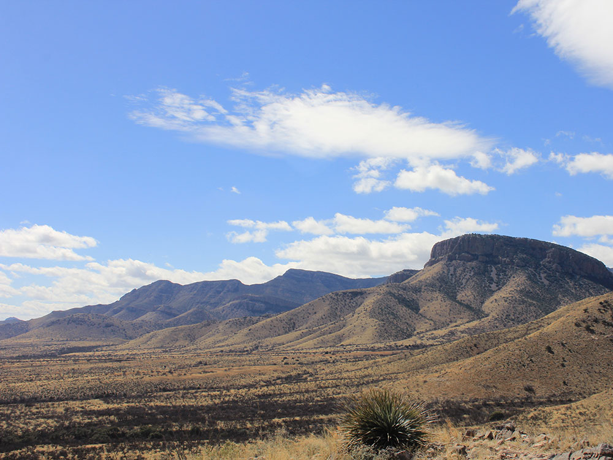

State park of Arizona, featuring a show cave with 2.4 miles (3.9 km) of passages
General Information
Holiday Hours: Thanksgiving and Christmas Eve 8:00am to 2:00pm
Closed Christmas Day
Per vehicle (2–4 people): $20.00
Individual/bicycle: $5.00
Cave tour tickets are additional and vary by tour type
How to Get There
From Tucson, AZ (50 mi): Take I-10 E to Exit 302 for AZ-90 S, then drive 9 miles south and follow signs to the park entrance.
Overview
Kartchner Caverns State Park protects a "living" limestone cave in the Whetstone Mountains of southeastern Arizona, with about 2.4 miles of passages filled with delicate formations that are still growing. The cave was discovered in 1974 by cavers Gary Tenen and Randy Tufts, who followed a faint breeze to a sinkhole and kept the discovery secret for years to protect it. The state purchased the land in 1988 and opened the cave to the public in 1999 after careful planning to preserve its humidity and temperature. It is known for its unusually well-preserved formations, including one of the world's longest soda straw stalactites in the Throne Room and extensive brushite moonmilk in the Big Room. The park's popularity comes from its guided cave tours, its desert hiking trails and its status as a seasonal home to a maternity colony of bats.
Access
The park is about 9 miles south of Benson and 50 miles southeast of Tucson, reached from I-10 exit 302 by driving south on AZ-90. The road is paved and signed, with parking at the Discovery Center. Visitors arrive by car, and tours begin at the Discovery Center, where a tram carries groups to the cave entrance. Cave tours have limited capacity and often sell out, so advance reservations are strongly recommended.
Seasons
The park is open year-round, and the Throne Room tour is offered all year. The Big Room tour is open only from mid-October to mid-April, because the Big Room is a maternity roost for a colony of cave myotis bats during the rest of the year. The cave stays about 68 degrees and very humid year-round, so it is a cool refuge in summer. Spring and fall are the best seasons for hiking in the desert foothills. Summer days can be hot, and monsoon storms occur from July to September.
Things to Do
Tour a Living Cave
Kartchner Caverns State Park offers guided tours of one of the best-preserved caves in North America. Strict protection measures, such as air-lock doors and misting systems, keep the cave environment healthy.
See the Throne Room
The Throne Room tour passes spectacular formations, including a 21-foot soda straw stalactite and the massive Kubla Khan column, in a large chamber with a light and sound show.
Visit the Big Room
Open in the cooler months, the Big Room tour features colorful formations such as the Cloud Room's moonmilk and the Gandalf columns.
Hike the Desert Trails
Trails in the foothills above the caverns offer views over the Sonoita grasslands and the Whetstone Mountains, plus chances to see wildlife and wildflowers.
Visit the Discovery Center and Camp
The Discovery Center has exhibits and a gift shop, and the park campground and cabins make it a convenient base for Tombstone, Bisbee and the Sonoita wine country.
Top Trails
Guindani Trail
Length: Approximately 4.2 miles loop
Elevation Gain: Moderate
Difficulty: Moderate
This longer trail climbs through the foothills above the caverns with views of the Whetstone Mountains and surrounding grasslands. It is a good choice for those who want a longer outing after a cave tour.
Foothills Loop Trail
Length: Approximately 2.5 miles loop
Elevation Gain: Moderate
Difficulty: Easy to Moderate
A scenic loop through desert foothills with views of the Discovery Center, the mountains and the surrounding desert. It is popular for morning walks and birdwatching.
Visitor Centers
The Discovery Center is the main building and the starting point for all cave tours. It includes exhibits on cave formation, the discovery of Kartchner and the cave's ecology, a gift shop, a cafe and restrooms, and staff who check in tour tickets and answer questions. The park is open daily except Christmas Day, with seasonal hours, and cave tour tickets are sold separately from park admission. Check the Arizona State Parks website for current tour schedules and reservations.
Camping and Lodging
The park has a campground with tent and RV sites with hookups, restrooms and showers, and a small number of cabins, which are popular and should be reserved in advance. Hotels, motels and restaurants are in Benson, about 15 minutes away, and the historic town of Tombstone, about 30 minutes south, which has inns and bed-and-breakfasts. Sierra Vista, Bisbee and Tucson offer more lodging within about an hour. Check each location's website for current availability.
This article uses material from the Wikipedia article "Kartchner Caverns State Park", which is released under the Creative Commons Attribution-Share-Alike License 3.0 Additional information from Arizona State Parks.

Elitemedia.network, CC BY 4.0, via Wikimedia Commons ; Image Size Adjusted